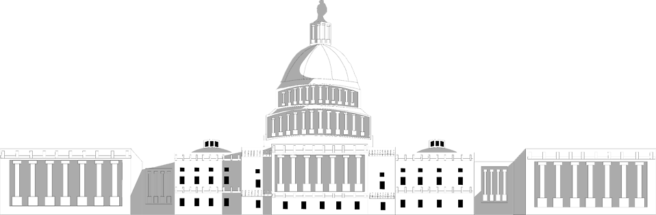

United States Member of Congress for NY-23
My name is Kishan Patel. I currently serve in the U.S. House of Representatives and was elected into office at age 28. I graduated from Yale College in 2023 and went on to Oxford University as a Rhodes Scholar where I studied Computer Science and Public Policy. I then went onto receive a J.D. from Yale Law School in Constitutional Law.
I studied Constitutional Law at Yale Law School and I hope to use my skills to advance public policy.
I studied Computer Science at Yale and I am passionate about using machine learning and data science to improve our political systems.
© 2020 Kishan Patel.